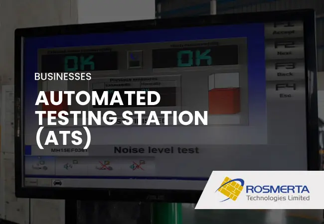
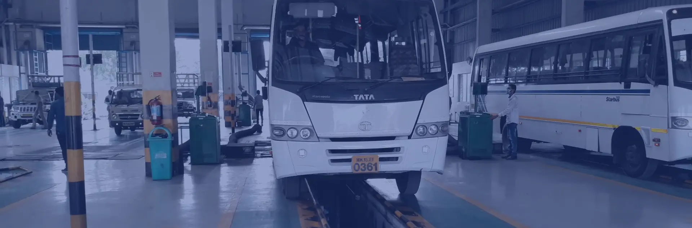
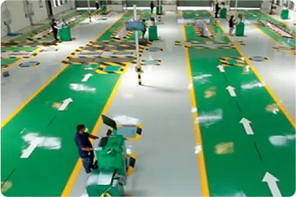
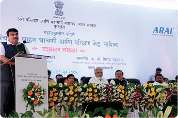
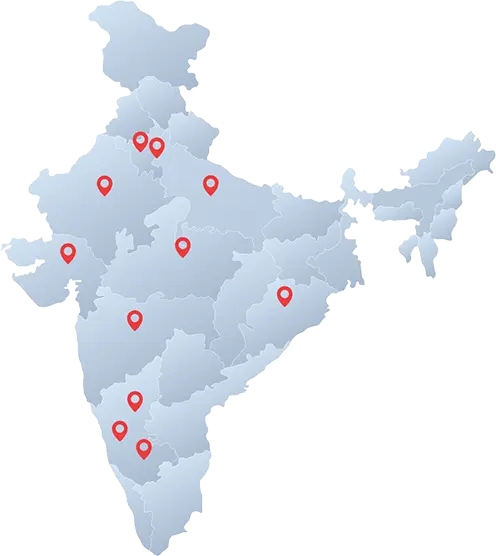
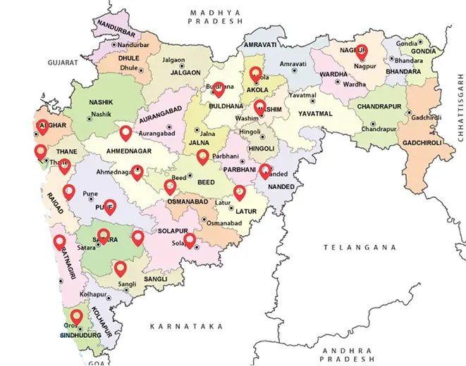

Rosmerta stands as India's first and foremost leader in ATS, with a network of 7 operating centers
across nation.
Established India’s 1st ATS in Nashik, Maharashtra
9 Model Automated Testing centres (ATS) established for MORTH
3 Automated Testing centers (ATS) established and operated for Karnataka Government.
Establishing 21 ATS centres across Maharashtra for the Maharashtra Government.

First and largest established player in India
Collaborated with entities like MoRTH, SIAM, ICAT, ARAI, and CIRT for ATS regime
5,40,000+
vehicle tested and counting
9 Years
Operating since 2015
Testing centers are fully integrated with test lanes connected to specialized lane movement software.
An expert team with advanced testing, troubleshooting skills,
and extensive training
capabilities
Partners with top global
technology providers like
VTEQ and Maha.





At Rosmerta, we believe safer roads begin early. The Curious Bunch is our road safety doodle book that helps children learn responsible road behaviour through fun, interactive learning.
Join the Waitlist